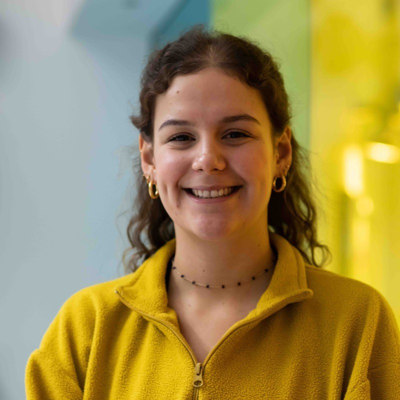

Sophie Wilson
UX Designer

Graduated from Brunel University London with a First in Industrial Design and Technology BA.
Currently working at Interstate Creative Partners as a Junior UX Designer, where I am
developing my skill set by learning to become a front end web developer.
Employment History
Junior UX Designer, Interstate Creative Partners | September 2022 - Present
- Working collaboratively in the digital team, I am involved in all aspects of projects from the initial briefing to presenting high fidelity prototypes to clients.
- Worked on projects including product interaction, user experience journeys, multi-language websites, web-based apps and interactive data visualisation.
- Day to day tasks include; user research, user journey mapping, information architecture, prototyping, usability evaluation and wireframing.
Key Responsibilities Include:
- Collaborating within the digital design team to assess complex problems with a UCD mindset.
- Presenting work to clients by clearly communicating the UX logic behind designs through structured and visually engaging presentations.
- Sharing the workload with team members to ensure everyone is supported and projects are delivered on time.
- Organising cross department meetings to ensure there is effective communication when collaborating on projects.
- Participating in client workshops as a lead UX designer to understand the end users needs and client goals for projects.
- Navigating scenarios when clients don’t provide the team with content or feedback by offering alternative design solutions to push the design forward.
- Taking client and user feedback onboard and implementing changes to my designs that will create an alleviated experience for the end users.
- Personal development includes researching the latest UX findings and experimenting with new software which can later be used to alleviate the internal design process.
- Personal development includes researching the latest UX findings and experimenting with new software which can later be used to alleviate the internal design process.
Personal Achievements
- Being a key team member in a project that led to Interstate becoming the sole contracted design consultancy for a global client.
- Being a key member in the design team that took an app to market which includes innovative software that supports bluetooth connectivity for web-apps.
- Using personal skills to support the wider team by creating 3D CAD visuals to mockup their designs, leaving clients impressed by the quality of work produced.
- Creating an accessibility toolkit for the wider team as part of an initiative to highlight inclusive design throughout all departments.
- Promoting external team building exercises with colleagues by organising the participation in a netball tournament.
Graphic Design Volunteer, JAGS Foundation | November 2020 - October 2021
- JAGS is a charity focused towards the support of young people to build positive social change, addressing violence and correlating issues in vulnerable communities.
- Independently designed a number of graphic projects, fitting in with the JAGS branding, across the charity such as promotional posters, reports and presentation slides.
- Organising meetings with stakeholders to receive feedback and push the designs forward to meet their expectations.
Graphic Design Intern, Spark Design & Communication, Kyrgyzstan | September 2020 - April 2021
- Worked on projects including retail interiors, social media posts and corporate calendars.
- Developed content with multiple languages such as Russian and Kyrgyz.
- Key criteria for the role were attention to detail, prioritisation and successfully delivering projects for the end user.
- Responsibilities included, interpreting client briefs, creating initial designs for a range of graphic mediums, working across multiple clients, and developing briefs to a professional level.
- Worked alongside the senior designers gaining feedback from them and learning from their expertise.
- Developed an understanding of effective communication across video conferencing as well as different time zones.
Education
Industrial Design and Technology BA, Brunel University London | September 2018 - June 2022
- Graduated with First Class Honours
- Dissertation project received "Best in Wellbeing" accolade.
- Modules included; Interaction and User Experience Design, Advanced Design Innovation, Environmentally Sensitive Design, and Design Communication.
Independent Personal Development
Design for Environmental Sustainability and Social Impact, Acumen Online Course | 2021
- Worked collaboratively in a team to design a service to tackle environmental challenges with concepts like systems thinking, circular design and behaviour change in partnership with social entrepreneurs and conservation organisations.
Design Thinking for the Greater Good: Innovation in the Social Sector, Coursera Online Course | 2021
- Developed tools, techniques and mindset needed to use design thinking to uncover new and creative solutions in the social sector.
Engineering Design for a Circular Economy, Edx/TU Delft Online Course | 2020
- Explored circular economy within design focusing on the seven R’s and promoting product sustainability.
Skills
Design Skills
- User Research
- Wireframing & Prototyping
- Information Architecture
- UI & UX Design
- UCD Design
- Usability Evaluation
- Accessible Design
- Storyboarding
Technical Skills
- Figma
- Sketch
- Adobe XD
- Protopie
- HTML
- CSS
- Javascript
- Arduino
- InDesign
- Photoshop
- Cinema 4D
- Solidworks
- SketchUp
- 3D Printing
- Miro
- Apple iWork office suite
Personal Skills
- Collaboration
- Communication
- Empathetic
- Team Player
- Critical Thinking
- Adaptability
- Positivity
Recognition
University "Best of Wellbeing" Award, Brunel University London | 2022
- Personal dissertation project at university, Bounce, was given the Best of Wellbeing award within the year group.
A-Level Design and Engineering Prize, Hurstpierpoint College | 2018
- Awarded prize for being the most advanced designer in my final sixth form year.
Other
About Me
Contact Me